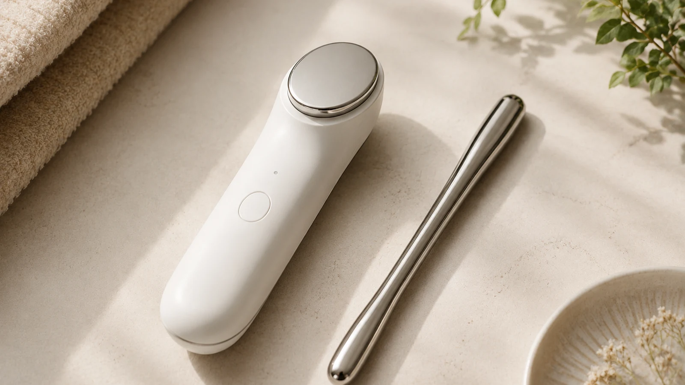

The Bojin Journal · Myths & real talk
Bojin vs. Microcurrent: Compare Cost, Evidence, and Daily Use

One more device on the bathroom shelf. One more routine to remember. Before you buy it, you want to know whether it will add something you value, or become another thing you feel guilty about not using.
Compare Bojin and microcurrent by what you want from the routine, the evidence behind the specific option, its safety limits, and the work it adds to your day. A face that feels tense or looks less firm is not enough to tell you which one to choose.
What you are actually comparing
The Bojin Method is taught here as a manual facial self-care practice, using demonstrated sequence, angle, placement, and comfortable contact. A microcurrent device applies low-level electrical current through skin contact, according to its manufacturer's instructions. Device designs, waveforms, attachments, and routines vary.
That difference describes how you use them. It does not establish that one reliably drains fluid, builds muscle, or produces a better cosmetic result. This page does not present a head-to-head trial showing Bojin is better than microcurrent, or the reverse.
| Question | Bojin as taught here | Microcurrent device |
|---|---|---|
| What do I follow? | A demonstrated manual placement and contact. | Instructions for the exact model and attachment. |
| What goes on the skin? | A product your skin tolerates for slip, when appropriate. | The conductive medium specified by the manufacturer. |
| What is the upkeep? | Clean hands and tools; time to learn the placement. | Cleaning, charging, required products, and any app steps. |
| What am I paying for? | Any chosen tool, product, or paid instruction; a sample lesson is free. | The device and required supplies; optional accessories add cost. |
| What does this prove? | A clear lesson shows what to do; it is not clinical proof of lifting. | Evidence must match the device and protocol, not just its category name. |
Read the evidence beyond the word microcurrent
Different electrical technologies can appear under similar beauty claims. One 2024 randomized split-face study enrolled 36 healthy Korean women and assessed eight weeks of a device combining light, radiofrequency, microcurrent, and ultrasound. It reported improvements in several skin measurements compared with baseline and the control side.
Those findings belong to that combined device and study design. They cannot tell us how much microcurrent alone contributed, whether another model will do the same, or how it compares with Bojin. This is why a convincing before-and-after image or a familiar technology name is not enough to make the comparison.
For Bojin, the practical reason to explore a lesson is to see whether a gentle manual practice makes sense to you. We do not use that device study as proof of Bojin efficacy or promise a lasting lift. See what Bojin can and cannot do for this site's boundaries.
Safety belongs to the exact model
Use the manufacturer instructions for the product you own or are considering. NuFACE publishes separate manuals for its devices and attachments. A routine for one attachment is not permission to use another the same way.
As one concrete example, ZIIP HALO's official contraindications and warnings include pregnancy, seizure conditions, implanted electronic devices, and certain skin conditions or areas. These examples are not a complete checklist or a rulebook for every microcurrent device. Read your own model's current instructions in full.
If a label says not to use the device, do not replace that instruction with a gentler setting or an alternating-day plan. If you recently had a procedure or have a medical concern, ask your treating professional and the manufacturer before use.
Can you combine them?
This guide does not provide a combined protocol. Simply using them on separate days does not establish that a combination is appropriate for your skin, device, or recent procedures. You do not need to double the routine just because you own both options.
Use only a plan consistent with your exact device instructions and any advice you have received for your situation. When those instructions do not answer the combination question, ask rather than filling the gap with a schedule from another product.
Five decisions before spending more
- Name the goal without diagnosing your face Separate wanting a quiet self-care pause from wanting a visible cosmetic change. A feeling of tension or a photograph does not tell you which device or practice your face needs.
- Check the exact device and instructions If considering microcurrent, identify the model, its intended use, prohibited areas, required conductive medium, and contraindications. Do not transfer settings or instructions from another model.
- Look for evidence that matches the purchase Ask what device was studied, who took part, what changed, and how it was measured. Evidence for a combined-energy device or a different electrical-stimulation method is not interchangeable with evidence for your model.
- Budget for the routine you would actually keep Include required products, cleaning, charging or app steps, and the recommended time commitment. For manual practice, include any tool, skin-tolerated glide product, or paid instruction you choose.
- Choose a small next step Read the manual or watch one clearly identified lesson before spending more. You can postpone either option. Do not add a combined routine until any relevant safety questions have been resolved.
For cost, compare the current checkout total and the supplies you would replenish, rather than a single headline price. A cosmetic oil used for manual glide is not automatically a substitute for a device's required conductive medium. Buying fewer things is a reasonable result of this comparison.
Quick answers
Is Bojin or microcurrent better for lifting?
This guide does not establish that one produces better lifting. Microcurrent results depend on the device and protocol studied; Bojin is taught here as gentle manual self-care. Neither a tense feeling nor a loose-looking area is enough to choose a treatment.
Do studies of electrical facial devices prove every microcurrent device works?
No. A result applies to the device, participants, and protocol studied. For example, a 2024 trial combined light, radiofrequency, microcurrent, and ultrasound, so its findings cannot be assigned to microcurrent alone or every device sold under that label.
Can I use Bojin and microcurrent together?
This guide cannot give you a universal combination schedule. Using them on separate days does not by itself establish safety. Follow your exact device instructions and ask the manufacturer and your treating professional about procedures, skin concerns, or health restrictions.
Which costs less to try?
You can view the free Inner Brow Release lesson before buying a device or tool. A microcurrent budget should include the device, required conductive products, and any accessories you choose. A free sample lesson is not the same as a full course; compare any paid teaching or tool costs separately.
Is manual Bojin automatically safe if I cannot use an electrical device?
No. Having no electrical current does not remove the risks of pressure, friction, irritated skin, or recent procedures. An electrical-device restriction is not permission to substitute manual facial work; ask an appropriate professional if you are unsure.
Watch one placement before adding a purchase
The free three-minute Eye Reset video teaches the Inner Brow Release. It introduces one Bojin placement, not a full-face course, a microcurrent routine, or instructions for combining the two.
Explore the free Eye Reset videoYu-Ting Lan is a Taiwan-based international bojin instructor and the founder of Héhé Studio. She has taught her bojin method to more than a thousand students, from complete beginners to grandmothers, across Taiwan, Hong Kong, and Malaysia.